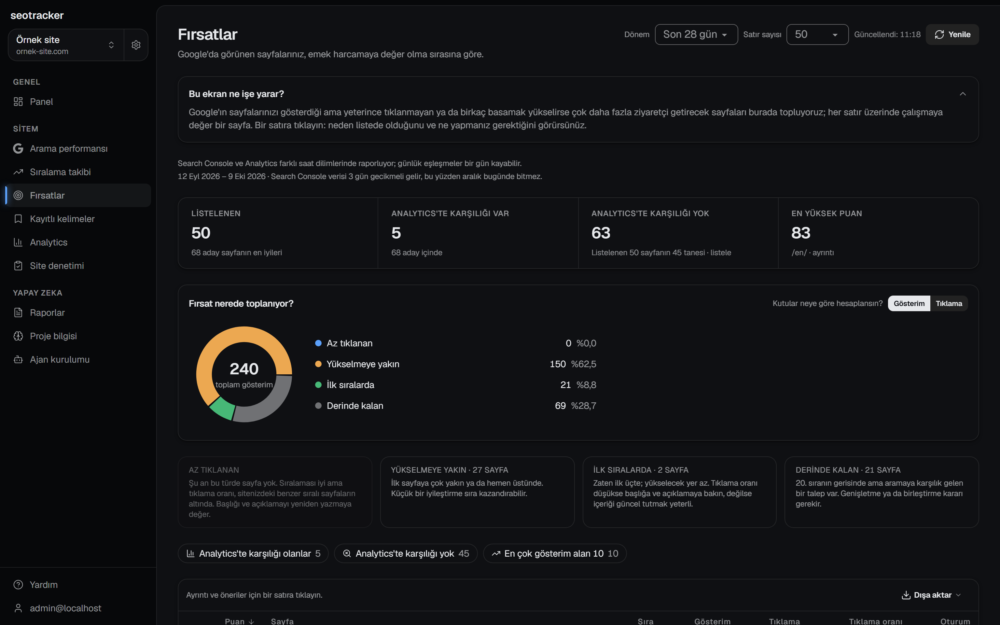
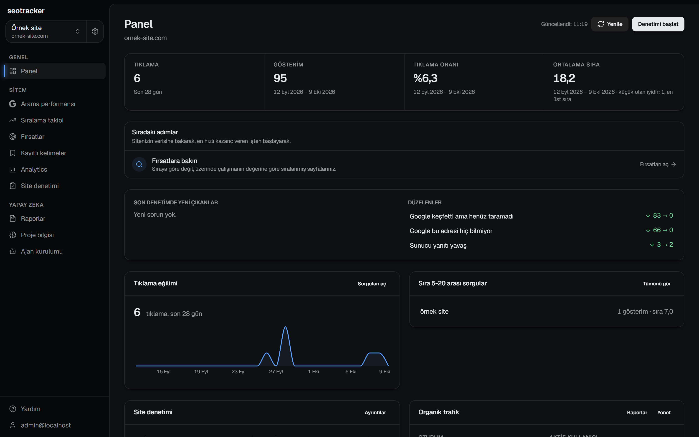
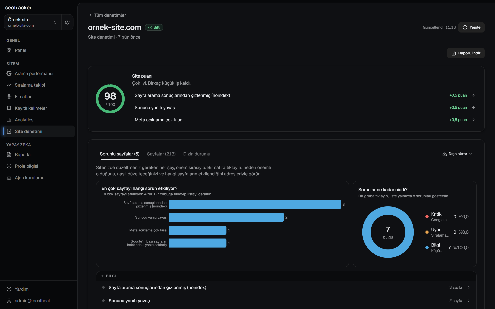
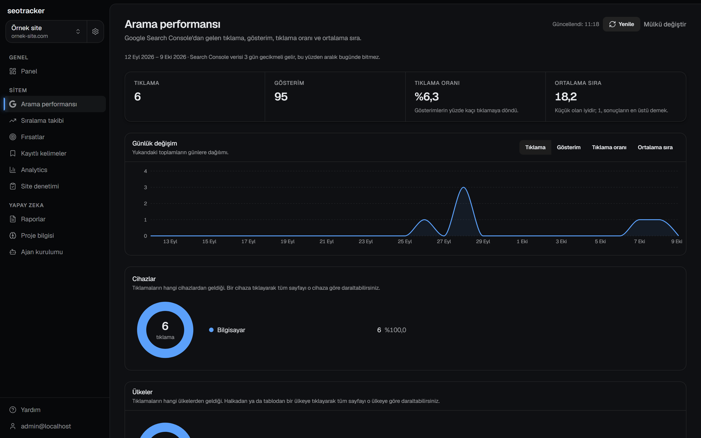
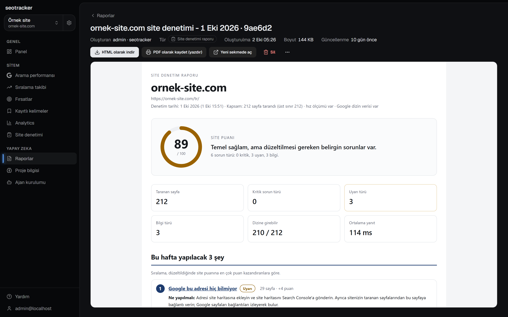
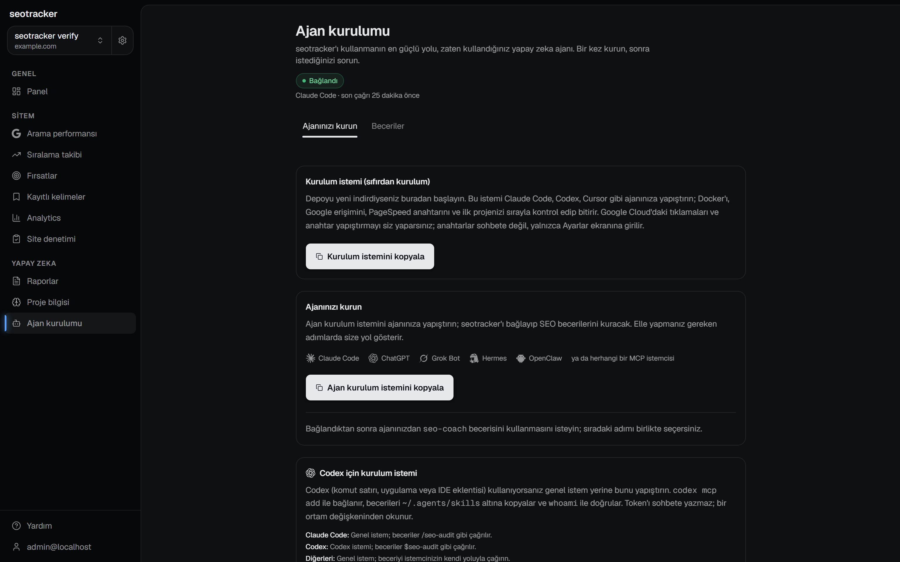

Search Console, Analytics 4 ve 95 kurallık site denetimi tek uygulamada. Abonelik yok, hesap yok. Verileriniz dışarı çıkmaz.
Windows 10/11, 64 bit. Tek kurulum dosyası; Docker, Node ya da
terminal gerekmez. Mac ve Linux için
docker compose up -d.

İlk ikisi iki dakika sürer. Üçüncüsü Google'ın Search Console verisini üç gün geriden getirmesi kadar.
Kurulum dosyası uygulamayı kullanıcı klasörünüze kurar,
veritabanını hazırlar ve tarayıcıda
127.0.0.1:3001 adresini açar. Görev çubuğundaki
simgeden açılır, kapanır, yeniden başlar.
Google Cloud Console'da bir OAuth istemcisi oluşturun, kimliği ve gizli anahtarı uygulamanın Ayarlar → Google bağlantısı ekranına yapıştırın. Adım adım rehber uygulamanın içinde.
Search Console mülkünüzü seçin. Panel, arama performansı, fırsatlar ve dizin durumu kendiliğinden dolar; site denetimini tek düğmeyle başlatırsınız.
Üçüncü taraf veri satın almaz. Sitenizin kendi Search Console ve Analytics verisi, kendi tarayıcısı ve PageSpeed ile çalışır.
Tıklama, gösterim, tıklanma oranı ve ortalama sıra; sorgu, sayfa, ülke ve cihaza göre. 16 aya kadar geçmiş.
Az tıklanan, yükselmeye yakın (5-20. sıra), ilk sıralardaki ve derinde kalan sorgular; her biri sahibi olması gereken sayfayla.
Kendi tarayıcısı siteyi gezer, 95 kuralla kontrol eder: kırık bağlantı, canonical, hreflang, başlık, yapısal veri, Core Web Vitals. Her bulgunun düzeltme adımı var.
Organik oturumlar, açılış sayfaları, anahtar olaylar, kanal karşılaştırması ve ölçüm sağlığı: düşüş gerçek mi, etiket mi koptu?
Google'ın her sayfa için kendi yanıtı: dizinde mi, neden değil, en son ne zaman tarandı, hangi canonical'ı seçti. Kota göstergesiyle.
Denetim sonunda tek dosyalık HTML rapor; telefonda okunur, PDF'e basılır. Şablonla haftalık eylem raporu, check-in, düşüş incelemesi.
Claude Code, Codex veya Cursor'a 33 MCP aracı ve 6 hazır beceri: denetim, triage, check-in, rapor. Kurulum metni uygulamanın içinde, tek kopyala.
Yalnızca 127.0.0.1'i dinler. Dışarıya Google'a yaptığınız bağlantı ve günde bir sürüm kontrolü gider. Token'lar diskte şifreli.
Görüntülerdeki site ve rakamlar örnektir.





Evet. MIT lisanslı açık kaynak; kaynak kodu GitHub'da. Kullandığı Google API'leri (Search Console, Analytics Data, PageSpeed Insights) de ücretsiz kotalarıyla çalışır.
Kurulum dosyası henüz kod imzalı değil. SmartScreen ekranında Daha fazla bilgi → Yine de çalıştır deyin. Dosyanın özeti her sürümün GitHub Releases sayfasında yazar.
Windows'ta %LOCALAPPDATA%\seowatcher klasöründe:
veritabanı, Google token'larını şifreleyen anahtar ve günlükler.
Uygulamayı kaldırmak bu klasöre dokunmaz; yedeklemek için
kopyalamanız yeter.
Çünkü uygulama bir bulut hizmeti değil; sizin bilgisayarınız doğrudan Google'a bağlanıyor ve Google, bağlanan uygulamanın kime ait olduğunu bilmek istiyor. Bir kez yapılır, beş dakika sürer, uygulamanın içinde adım adım anlatılır.
Aynı kaynaktan okunur, ancak Google veriyi yaklaşık üç gün geriden verir ve çok az aranan sorguları gizler. Sayfa tablosunu toplamak site toplamını vermez; uygulama bunu ayrı gösterir.
Docker ile kurulur: depoyu indirin,
docker compose up -d deyin,
localhost:3001 adresini açın. Ayrıntılar GitHub'daki
README'de.
Evet. Ürünün GitHub'daki adı seotracker; seowatcher bu sitenin ve Windows paketinin adı. Kod, sürümler ve belgeler aynı depoda.
Windows için tek kurulum dosyası. Mac ve Linux için Docker.